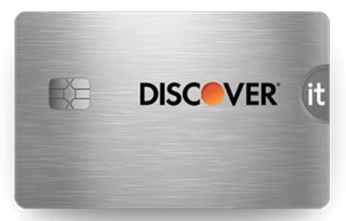

Credit Access for Women and Minorities in Computer Science
Introduction
Access to credit is crucial for women and minorities in the computer science field, whether for funding education, starting a business, or advancing careers. While systemic barriers exist, individuals from these groups can take proactive steps to improve their creditworthiness and secure better financial opportunities.
Building Credit History
Establishing Credit Early
Open a Credit Card: Start with a secured or student credit card to build credit history. Use it for small purchases and pay off the balance in full each month. One place to get one is the Discover Secured Credit Card for students.
Use Credit Responsibly: Maintain a low credit utilization ratio (ideally below 30%) to demonstrate responsible credit management.
Monitor Your Credit Score
Regularly check your credit report for errors or discrepancies using free services. Staying informed helps you address issues promptly.
Understand the key factors affecting your score, such as payment history, credit mix, and length of credit history.

Building a Strong Financial Profile
Create a Budget
Develop a personal or business budget to manage expenses effectively. This helps in planning for loan repayments and understanding cash flow.
Use budgeting tools and apps to track spending and savings.
Eventually, you will reach one of the higher-end ranges of the FICO score ranges.

Leverage Professional Skills
Use your skills in computer science for freelance work or side projects. A robust professional portfolio can enhance earning potential and creditworthiness.
Conclusion
Women and minorities in computer science can enhance their credit access through proactive financial management, education, and networking. By building a solid credit history and leveraging available resources, they can improve their financial stability and open doors to new opportunities.